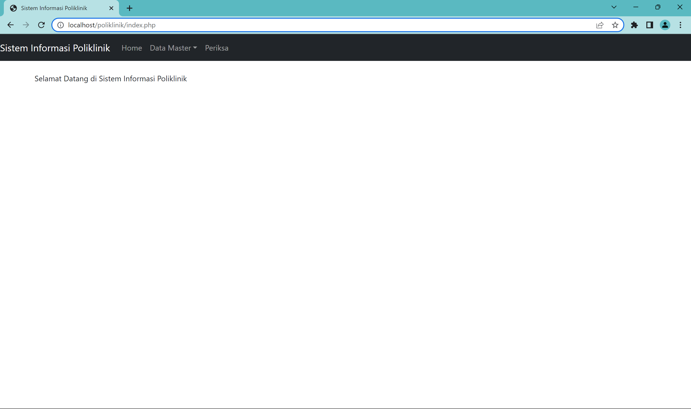
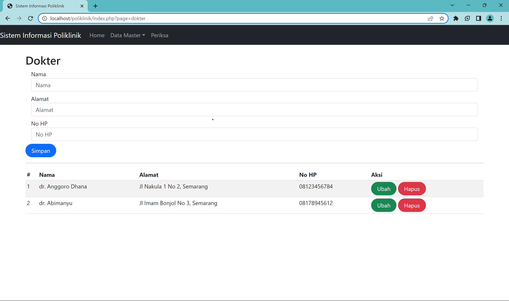
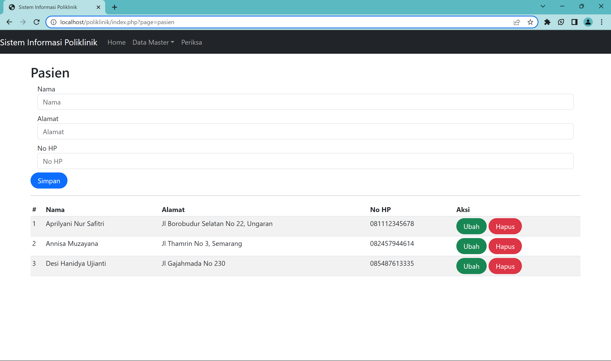
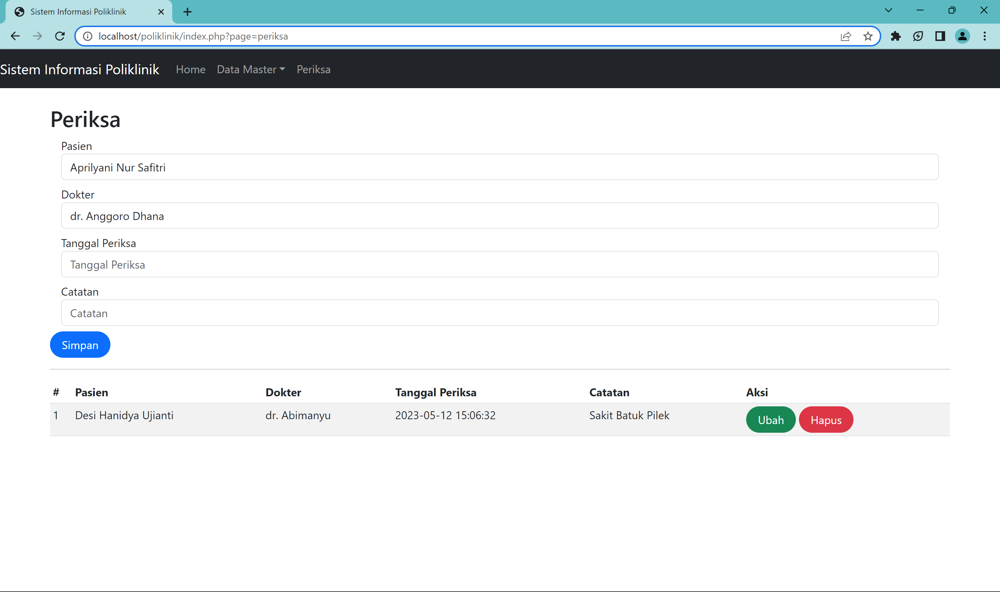
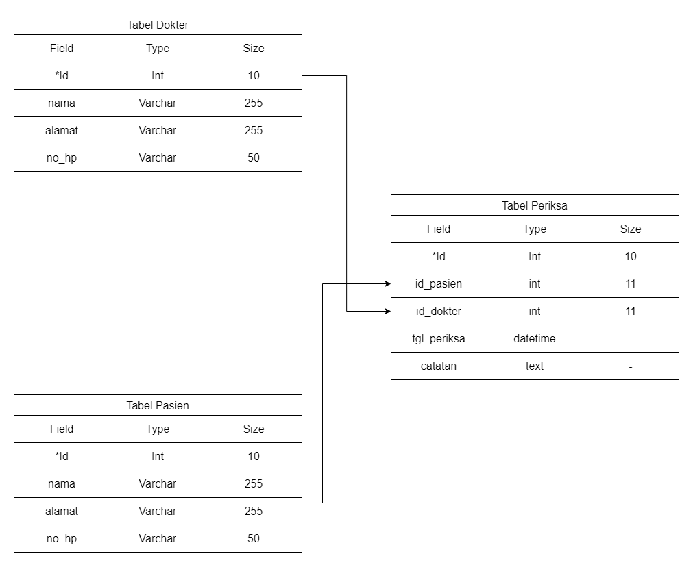
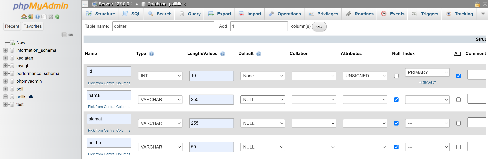
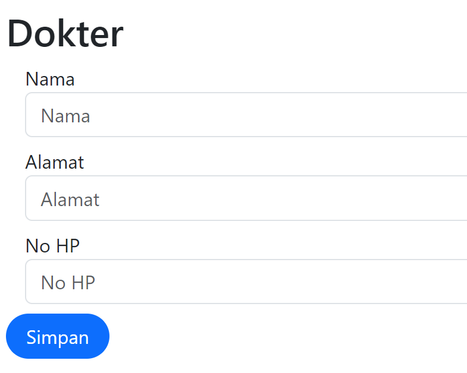
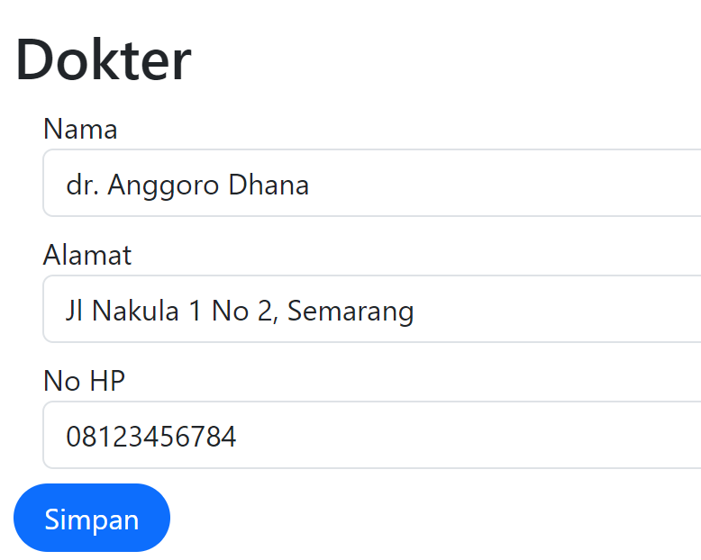
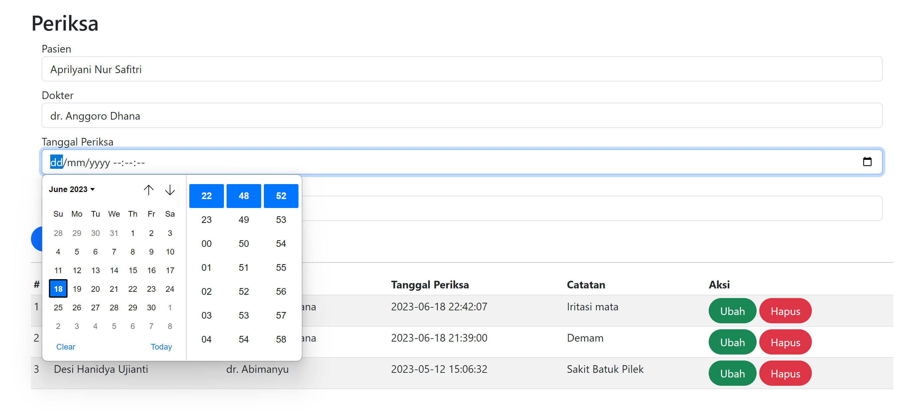

Studi Kasus (Poliklinik)
Dalam studi kasus poliklinik mahasiswa dapat membuat web sederhana mengenai poliklinik dengan fitur home, data master (berisi data dokter dan pasien), dan periksa.




Database
Membuat database baru pada localhost/phpmyadmin dengan nama poliklinik. setelah itu dapat membuat tabel-tabel yang diperlukan, yaitu tabel dokter, tabel pasien, tabel periksa.

Tabel Dokter dan Pasien bisa dikatakan memiliki hubungan many-to-many, jika setiap dokter dapat melayani banyak pasien, dan setiap pasien dapat ditangani banyak dokter. Sehingga diperlukan adanya tabel penghubung dari kedua tabel tersebut, yaitu tabel periksa.
Dokter
Pada tabel dokter dapat menyimpan id, nama, alamat dan nomor hp. Pada tabel tersebut id merupakan primary key dengan tipe data integer, pada field nama, alamat, dan nomor hp memiliki tipe data varchar.Pasien
Pada tabel pasien dapat menyimpan id, data nama, alamat, dan nomor hp. Primary key terletak pada id dengan tipe data integer, pada field nama, alamat dan nomor hp bertipe data varchar.Periksa
Pada tabel periksa menyimpan data id periksa, id dokter, id pasien, tanggal periksa dan catatan. Pada tabel periksa saling terhubung dengan tabel dokter dan pasien melalui id dokter dan id pasien. id dokter dan id pasien berperan sebagai foreign key.
Buatlah tabel-tabel yang diperlukan untuk membuat web mengenai poliklinik sesuai dengan yang telah diperlajari sebelumnya, berikut adalah contoh pembuatan tabel dokter.

CREATE TABLE `poliklinik`.`dokter` (
`id` INT(10) UNSIGNED NOT NULL AUTO_INCREMENT ,
`nama` VARCHAR(255) NULL DEFAULT NULL ,
`alamat` VARCHAR(255) NULL DEFAULT NULL ,
`no_hp` VARCHAR(50) NULL DEFAULT NULL ,
PRIMARY KEY (`id`)) ENGINE = InnoDB;
Id pada setiap tabel ditambahkan dengan auto increment, sehingga id akan secara otomatis menambahkan data integer secara berurut pada setiap id tabel. Dari contoh tabel dokter di atas dapat dilanjutkan dengan membuat 2 tabel lainnya, yaitu tabel pasien dan tabel periksa.
Koneksi
Koneksi merupakan penghubung antara database dengan web yang dibuat.
<?php
$databaseHost = 'localhost';
$databaseName = 'poliklinik';
$databaseUsername = 'root';
$databasePassword = '';
$mysqli = mysqli_connect($databaseHost,
$databaseUsername, $databasePassword, $databaseName);Sama seperti yang digunakan sebelumnya, dimana untuk menghubungkan SQL dengan PHP digunakan fungsi mysqli_connect dengan parameter host, username, password, dan nama dari database.
Index
Setelah membuat file koneksi, maka perlu load kode koneksi tersebut ke file php yang akan dibuat.
Untuk membuat tampilan yang responsive dapat load atau install Bootstrap dengan menggunakan kode url yang disediakan pada web Bootstrap atau mendownload paket yang disediakan oleh Bootstrap.
Index
Pada bagian index akan menampilkan home atau dashboard dari web poliklinik yang berisikan navbar dan ucapan selamat datang di website poliklinik.
Navbar
Untuk membuat navbar dapat membuka bootstrap dan mencari pada kolom pencarian yang telah disediakan dengan kata kunci nav atau navbar. Carilah navbar yang sesuai dengan navbar yang ada pada tampilan home poliklinik di atas. Pada navbar ditampilkan nama website, home, dropdown yang berisi dokter dan pasien, dan yang terakhir adalah periksa. Modifikasi kode navbar dari Bootstrap, hapus bagian yang tidak digunakan.
Pada bagian href untuk mengarahkan atau berpindah halaman web dapat langsung menuliskan nama/path file, untuk file dinamis maka dapat menuliskan alamat href seperti berikut.
<li>
<a class="dropdown-item" href="index.php?page=dokter">
Dokter
</a>
</li>
<li>
<a class="dropdown-item" href="index.php?page=pasien">
Pasien
</a>
</li>Dari kode diatas melalui file index dapat menampilkan tampilan atau data sesuai dengan parameter yang dimasukkan, misalnya tampilan halaman dokter.
Membuat tampilan dinamis.
Masih pada file index, setelah menuliskan kode untuk menampilkan navbar adalah menuliskan kode untuk menampilkan tampilan dinamis sesuai dengan halaman yang dipilih pada navbar.
Tampilan dinamis merupakan kemampuan sebuah aplikasi atau halaman web untuk menyesuaikan dan mengubah kontennya secara dinamis berdasarkan input, data, atau kondisi tertentu. Dengan tampilan dinamis, halaman web dapat menampilkan konten yang berbeda untuk setiap pengguna atau situasi yang berbeda.
<main role="main" class="container">
<?php
if (isset($_GET['page'])) {
?>
<h2><?php echo ucwords($_GET['page']) ?></h2>
<?php
include($_GET['page'] . ".php");
} else {
echo "Selamat Datang di Sistem Informasi Poliklinik";
}
?>
</main>Kode tersebut menunjukkan cara dinamis untuk menampilkan halaman berdasarkan nilai parameter “page” dalam URL. Jika parameter “page” ada, maka konten halaman akan bervariasi sesuai dengan nilai tersebut. Jika tidak ada parameter “page”, maka halaman akan menampilkan pesan selamat datang.
Dokter
Pada halaman dokter.php menampilkan form, tabel dan beberapa tombol. Seperti pada program to do list, gunakan source code class tabel yang sesuai pada Bootstrap.
Form
Setelah tag form tambahkan kode php untuk menampilkan isi dari tabel yang dipilih ketika melakukan perintah ubah atau update, berdasarkan id dari baris yang akan diubah dengan menggunakan metode get.


Kode berikut ditambahkan setelah tag form dan sebelum input nama.
<?php
$isi = '';
$tgl_awal = '';
$tgl_akhir = '';
if (isset($_GET['id'])) {
$ambil = mysqli_query($mysqli, "SELECT * FROM kegiatan
WHERE id='" . $_GET['id'] . "'");
while ($row = mysqli_fetch_array($ambil)) {
$isi = $row['isi'];
$tgl_awal = $row['tgl_awal'];
$tgl_akhir = $row['tgl_akhir'];
}
?>
<input type="hidden" name="id" value="<?php echo $_GET['id'] ?>">
<?php
}
?>Tabel
pada bagian tabel sama dengan form dapat mencari kelas Bootstrap yang sesuai dan modifikasi sesuai kebutuhan. Pada bagian tabel body seperti berikut :
<?php
$result = mysqli_query($mysqli, "SELECT * FROM dokter");
$no = 1;
while ($data = mysqli_fetch_array($result)) {
?>
<tr>
<td><?php echo $no++ ?></td>
<td><?php echo $data['nama'] ?></td>
<td><?php echo $data['alamat'] ?></td>
<td><?php echo $data['no_hp'] ?></td>
<td>
<a class="btn btn-success rounded-pill px-3" href="index.php?page=dokter&id=<?php echo $data['id'] ?>">Ubah</a>
<a class="btn btn-danger rounded-pill px-3" href="index.php?page=dokter&id=<?php echo $data['id'] ?>&aksi=hapus">Hapus</a>
</td>
</tr>
<?php
}
?>Pasien
Pada halaman pasien.php menampilkan form dan tabel yang sama dengan halaman dokter, sehingga dapat memodifikasi kode-kode dari dari halaman dokter untuk disesuaikan ada halaman pasien.
Periksa
Pada halaman periksa.php untuk kelas tabel dan form yang digunakan sama dengan halaman-halaman sebelumnya. Namun ada perbedaan pada fungsi php yang digunakan, misalnya pada bagian input dokter.
<div class="form-group mx-sm-3 mb-2">
<label for="inputPasien" class="sr-only">Pasien</label>
<select class="form-control" name="id_pasien">
<?php
$selected = '';
$pasien = mysqli_query($mysqli, "SELECT * FROM pasien");
while ($data = mysqli_fetch_array($pasien)) {
if ($data['id'] == $id_pasien) {
$selected = 'selected="selected"';
} else {
$selected = '';
}
?>
<option value="<?php echo $data['id'] ?>" <?php echo $selected ?>><?php echo $data['nama'] ?></option>
<?php
}
?>
</select>
</div>Selain itu pada form yang digunakan juga terdapat form untuk input tanggal dan waktu sehingga digunakan tipe input “datetime-local”. Sehingga ketika akan mengisikan data akan muncul icon tanggal dan hanya perlu memilih tanggal dan waktu yang sesuai.

<?php
$result = mysqli_query($mysqli, "SELECT pr.*,d.nama as 'nama_dokter', p.nama as 'nama_pasien' FROM periksa pr LEFT JOIN dokter d ON (pr.id_dokter=d.id) LEFT JOIN pasien p ON (pr.id_pasien=p.id) ORDER BY pr.tgl_periksa DESC");
$no = 1;
while ($data = mysqli_fetch_array($result)) {
?>
<tr>
<td><?php echo $no++ ?></td>
<td><?php echo $data['nama_pasien'] ?></td>
<td><?php echo $data['nama_dokter'] ?></td>
<td><?php echo $data['tgl_periksa'] ?></td>
<td><?php echo $data['catatan'] ?></td>
<td>
<a class="btn btn-success rounded-pill px-3"
href="index.php?page=periksa&id=<?php echo $data['id'] ?>">
Ubah</a>
<a class="btn btn-danger rounded-pill px-3"
href="index.php?page=periksa&id=<?php echo $data['id'] ?>&aksi=hapus">Hapus</a>
</td>
</tr>
<?php
}
?>Kode tersebut merupakan contoh pengambilan data dari tabel “periksa” dalam database menggunakan MySQLi dengan menggunakan operasi LEFT JOIN untuk menggabungkan data dari tabel “dokter” dan “pasien”. Data tersebut kemudian ditampilkan dalam bentuk tabel pada halaman web.
Pertama, query SQL dieksekusi dengan menggunakan fungsi mysqli_query() untuk mengambil data dari tabel “periksa” dan melakukan JOIN dengan tabel “dokter” dan “pasien” berdasarkan ID dokter dan ID pasien yang terkait. Data tersebut kemudian disimpan dalam variabel $result.
Selanjutnya, menggunakan loop while, setiap baris data dari hasil query (data) untuk membentuk baris dalam tabel. Pada setiap sel, data seperti nomor urut (no++), nama pasien (data[‘nama_pasien’]), nama dokter (data[‘nama_dokter’]), tanggal periksa (data[‘tgl_periksa’]), dan catatan (data[‘catatan’]) ditampilkan.
Selain itu, pada setiap baris data, terdapat tautan “Ubah” dan “Hapus” yang mengarahkan ke halaman yang sesuai untuk mengedit atau menghapus data periksa. Tautan tersebut memiliki atribut href yang dinamis dengan menggunakan nilai ID periksa dari baris data saat ini (data[‘id’]).
Dengan menggunakan kode di atas, data periksa, termasuk informasi terkait dokter dan pasien, akan ditampilkan dalam bentuk tabel. Tautan “Ubah” dan “Hapus” memungkinkan pengguna untuk melakukan operasi edit dan hapus terhadap data periksa yang sesuai.